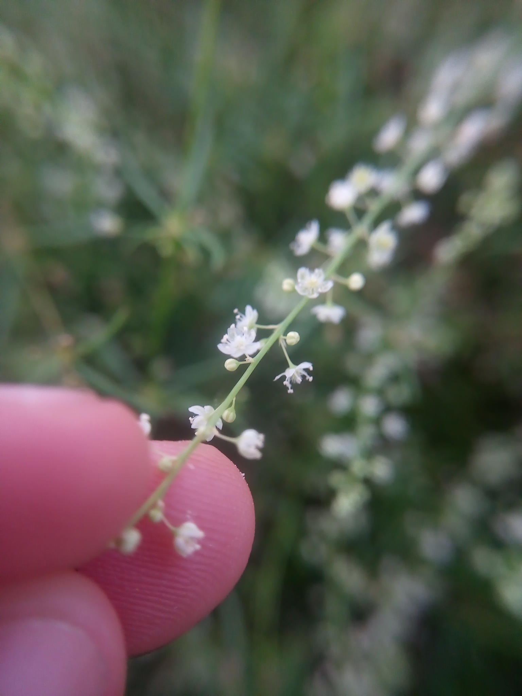

Microteaceae
(No widely accepted common name)
Microteaceae is a small family of flowering plants, typically containing only the genus Microtea. It comprises annual herbs found in the Neotropics (Central and South America, Caribbean). Placed in the order Caryophyllales, these plants are characterized by their small flowers often arranged in spike-like inflorescences and fruits that are achenes or utricles.
Overview
The Microteaceae family, established by Schäferhoff & Müller in 2009 based on molecular data, consists almost exclusively of the genus Microtea. These plants are annual herbs, sometimes becoming slightly woody at the base (suffrutescent), native to tropical and subtropical regions of the Americas. They often grow as weeds in disturbed areas, fields, and roadsides.
Historically, the genus Microtea was placed within the Phytolaccaceae or sometimes Petiveriaceae families. However, phylogenetic studies revealed it represents a distinct lineage within the core Caryophyllales, leading to the recognition of the separate family Microteaceae.
Plants in this family are generally inconspicuous, with small, greenish or whitish flowers. They are part of the large and diverse Caryophyllales order, known for adaptations to harsh environments and the presence of betalain pigments in many members (though anthocyanins occur in some basal lineages).
Quick Facts
- Scientific Name: Microteaceae Schäferh. & M.G. Gilbert
- Common Name: (None widely used)
- Number of Genera: 1 (Microtea)
- Number of Species: Approximately 9-12
- Distribution: Neotropics (Central America, South America, Caribbean)
- Evolutionary Group: Eudicots - Core Caryophyllales (Order Caryophyllales)
Key Characteristics
Growth Form and Habit
Annual herbs, occasionally suffrutescent (slightly woody at the base). Stems are erect or ascending, often branched.
Leaves
Leaves are alternate, simple, entire, and typically petiolate (though sometimes sessile). They lack stipules (exstipulate).
Inflorescence
Flowers are arranged in terminal or axillary spike-like or raceme-like bracteate cymes. The flowers are small and numerous along the inflorescence axis.
Flowers
Flowers are bisexual or sometimes unisexual (plants then monoecious or dioecious), actinomorphic (radially symmetrical), small, and greenish or whitish. Key features include:
- Perianth: Consists of (4-)5 distinct or basally fused tepals (perianth segments undifferentiated into calyx and corolla), often persistent in fruit.
- Androecium: Stamens variable in number, typically 1-9, sometimes alternating with staminodes. Filaments are free or slightly fused at the base.
- Gynoecium: A single superior ovary, unilocular (one chamber), containing a single basal ovule. Styles are 2-3, short, free or fused basally.
- Disc: Nectar disc is absent.
Fruits and Seeds
The fruit is an achene or a utricle (a small, bladdery, indehiscent fruit), often globose or lens-shaped, sometimes tuberculate or ribbed. The fruit is typically enclosed or subtended by the persistent perianth segments. The single seed is typically black and shiny.
Chemical Characteristics
As members of the core Caryophyllales, Microteaceae are presumed to produce betalain pigments (although this might need specific confirmation for all species). Calcium oxalate crystals (druses or raphides) are often present in tissues.
Field Identification
Identifying Microteaceae relies on recognizing their herbaceous habit, specific leaf arrangement, inconspicuous flowers in spike-like inflorescences, and small, dry fruits, combined with their Neotropical distribution.
Primary Identification Features
- Habit: Annual herbs, sometimes slightly woody below.
- Leaves: Alternate, simple, entire, exstipulate.
- Inflorescence: Spike-like or raceme-like cymes, terminal or axillary.
- Flowers: Very small, greenish/whitish, (4-)5 tepals, superior ovary, 1-9 stamens.
- Fruit: Small achene or utricle, often enclosed by persistent tepals.
- Distribution: Neotropical weeds or plants of open/disturbed areas.
Secondary Identification Features
- Ovary: Unilocular with a single basal ovule.
- Styles: 2-3, short.
- Lack of Nectar Disc: Flowers lack a prominent disc.
Seasonal Identification Tips
- Growing Season: Typically found during warmer, wetter periods in their range. Identification relies heavily on presence of flowers and fruits.
- Distinguishing Features: The combination of alternate simple leaves and numerous tiny flowers in dense, elongated inflorescences is characteristic.
Common Confusion Points
- Amaranthaceae (e.g., Amaranthus, Chenopodium): Many Amaranthaceae are also weedy herbs with small, greenish flowers in dense inflorescences. They often differ in having bracts/bracteoles that are scarious (dry/membranous) or spiny, different stamen numbers/arrangements, or different fruit dehiscence.
- Phytolaccaceae (e.g., Phytolacca): While previously associated, Phytolaccaceae (sensu stricto) typically have flowers with more prominent perianths, often fleshy fruits (berries), and different ovary structures (multiple carpels).
- Polygonaceae (e.g., Polygonum): Often have swollen nodes covered by a sheath (ocrea), which is absent in Microteaceae.
Field Guide Quick Reference
Look For:
- Annual herbs (Neotropical)
- Alternate, simple, entire leaves
- Exstipulate
- Spike-like/raceme-like cymes
- Tiny, greenish/whitish flowers
- (4-)5 tepals
- Superior ovary, 1 basal ovule
- Achene/utricle fruit
Key Variations:
- Stamen number (1-9)
- Fruit surface (smooth, tuberculate, ribbed)
- Plant size and branching
Notable Examples
The family primarily consists of the single genus Microtea:

Microtea debilis
(Common Microtea)
A widespread weedy annual herb found throughout the Neotropics. It has thin stems, relatively small leaves, and long, slender inflorescences bearing numerous minute, greenish flowers. Often found in disturbed soils, gardens, and cultivated fields.

Microtea maypurensis
(Maypure Microtea)
Another species found in tropical South America. It may differ from M. debilis in subtle characteristics of the fruit surface, flower parts, or overall robustness, depending on specific taxonomic treatments.

Microtea spp.
(Microtea species)
Various other species exist within the genus, primarily distributed in South America. Identification to the species level often requires close examination of fruit morphology and floral details.
Phylogeny and Classification
Microteaceae is placed within the large and diverse order Caryophyllales. Molecular phylogenetic studies position it firmly within the core Caryophyllales clade, a group characterized by the presence of betalain pigments (though some related families have anthocyanins) and often adaptations to extreme environments.
Within the core Caryophyllales, Microteaceae represents a distinct lineage. Its exact sister group relationship is still debated, but it appears relatively isolated from families it was previously associated with, like Phytolaccaceae. It is part of the broader diversification that includes families like Amaranthaceae, Caryophyllaceae, Aizoaceae, Cactaceae, and Nyctaginaceae.
Position in Plant Phylogeny
- Kingdom: Plantae
- Clade: Angiosperms (Flowering plants)
- Clade: Eudicots
- Clade: Core Eudicots
- Order: Caryophyllales
- Clade: Core Caryophyllales
- Family: Microteaceae
Evolutionary Significance
Despite its small size, Microteaceae contributes to understanding the complex evolutionary relationships within the Caryophyllales.
- Distinct Lineage: Its recognition clarifies the boundaries of related families like Phytolaccaceae and highlights a separate evolutionary trajectory within the core Caryophyllales.
- Biogeography: Its Neotropical distribution provides data points for understanding the historical assembly of floras in the Americas within the context of the Caryophyllales radiation.
- Morphological Simplicity: The relatively simple, reduced flowers may represent evolutionary modifications within the order, offering insights into floral evolution trends.